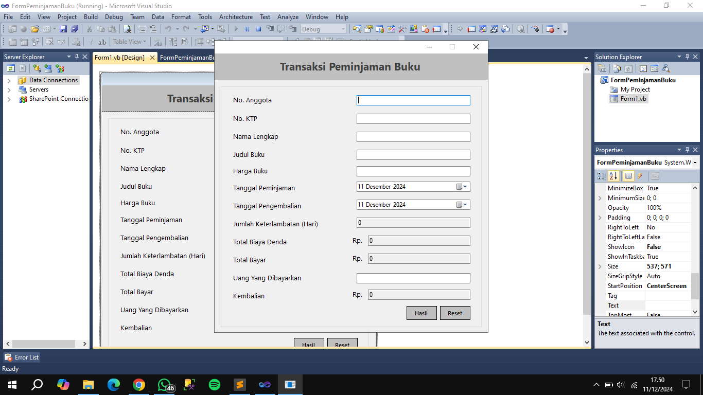
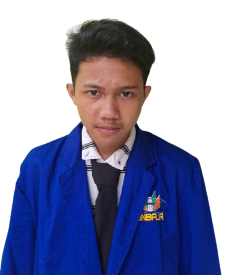

Hobi Saya
Bermain Futsal

Saya suka bermain futsal di waktu luang. Ini adalah cara yang bagus untuk tetap aktif dan bersenang-senang dengan teman-teman!
Proyek Saya
Website Portofolio
Ini adalah website portofolio pribadi saya di mana saya menampilkan keterampilan dan hobi saya. Tunggu pembaruan selanjutnya!
Tentang Saya
Nama saya Adita Putra. Saya memiliki ketertarikan pada teknologi dan senang mempelajari keterampilan baru. Di waktu luang, saya suka bermain futsal dan mengeksplorasi proyek kreatif.
Postingan Populer
Postingan 1
Postingan 2
Postingan 3